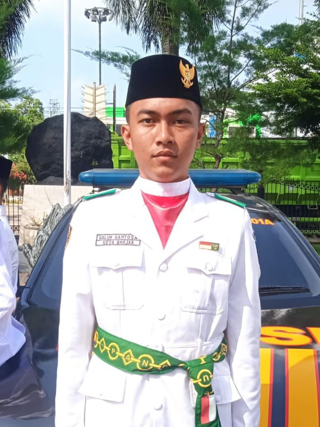

TENTANG SAYA
Lulusan SMKN 3 Banjar jurusan Rekayasa Perangkat Lunak yang berorientasi pada pembuatan aplikasi akan
tetapi saya lebih lihai pada desain grafis. pengalaman magang sebagai desain aplikasi yang akan dibuat
yang berorientasi pada ketepatan warna.
PENDIDIKAN
| 2011 - 2012 |
: TK PEMBINA |
| 2012 - 2018 |
: SDN 3 KUJANGSARI |
| 2018 - 2021 |
: MTsN 2 BANJAR |
| 2021 - 2024 |
: SMKN 3 BANJAR |
PENGALAMAN
| 2023 |
: Berpengalaman magang 3 bulan Sebagai desain grafis di Instansi Prilude Studio yang berada di
Kota Tasikmalaya |
| 2022 |
: Pernah menjadi salah satu anggota PASKIBRAKA Kota Banjar angkatan 2022 |
| 2023 - 2024 |
: Berpengalaman dalam mengurus organisasi pramuka di ambalan sebagai Pradana atau Ketua pramuka di
SMKN 3 Banjar sehingga saya dapat di percaya dan bisa mengerjakan tugas dengan tepat waktu |
BIODATA
| NAMA |
: Galuh Santosa |
| Tempat, tanggal lahir |
: Banjar, 22 Mei 2006 |
| Alamat |
: Dsn. Sindangmulya Desa Kujangsari Kec. Langensari Kota Banjar Provinsi Jawa Barat |